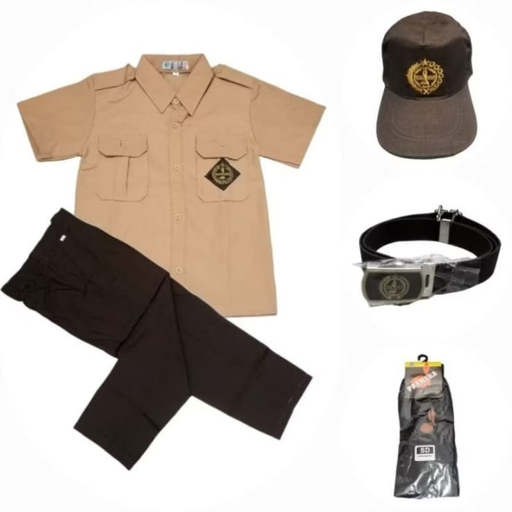
PENGGALANG
Penggalang Putra
Seragam Pramuka Penggalang untuk anggota putra.
PRAMUKA SCHOOL FASHION

Seragam Pramuka Penggalang untuk anggota putra.
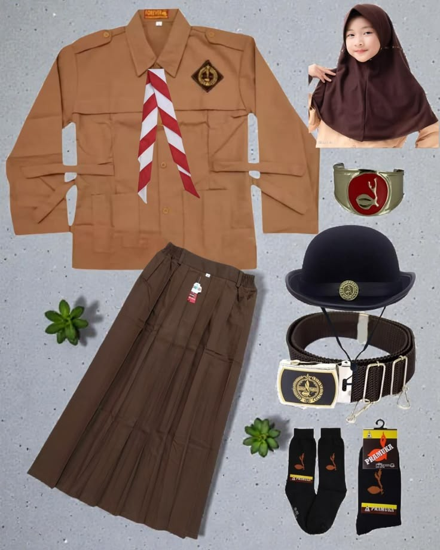
Seragam Pramuka Penggalang untuk anggota putri.
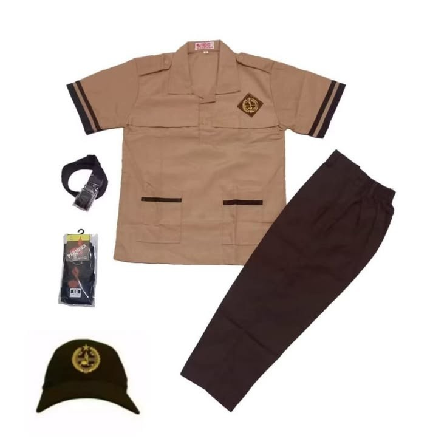
Seragam Pramuka Siaga untuk anggota putra.
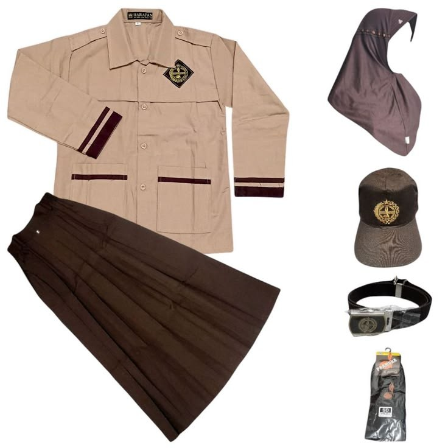
Seragam Pramuka Siaga untuk anggota putri.
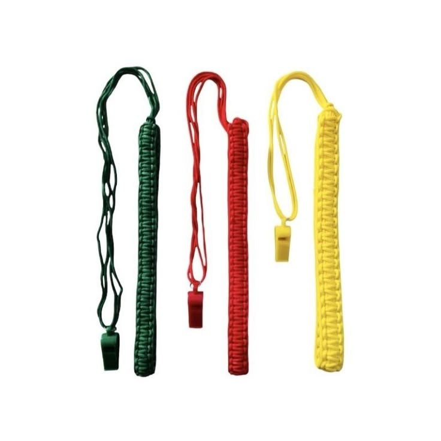
Peluit sebagai salah satu perlengkapan yang dapat digunakan dalam kegiatan Pramuka.
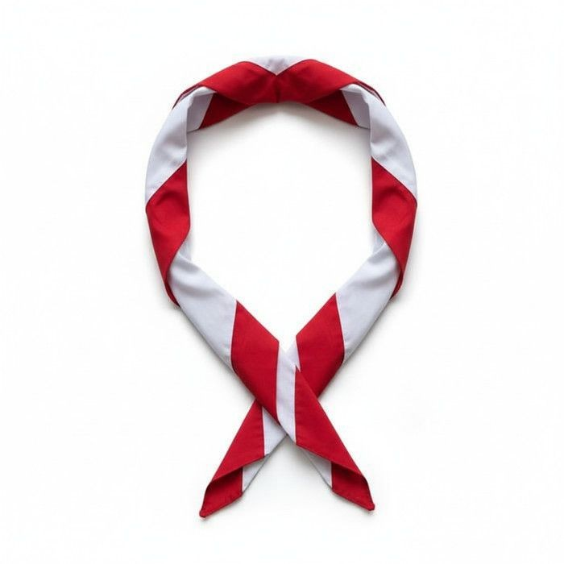
Kacu sebagai salah satu perlengkapan seragam Pramuka.
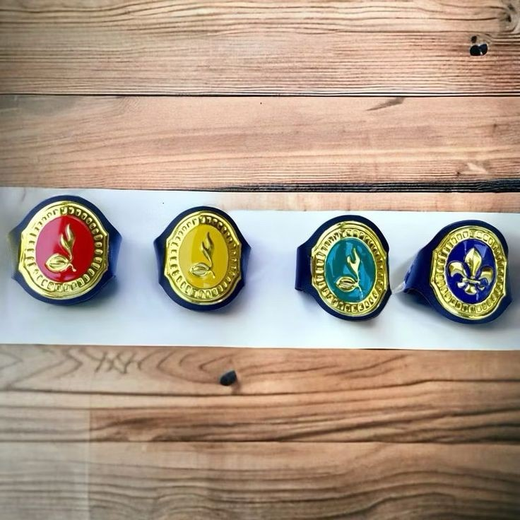
Ring kacu untuk melengkapi dan merapikan kacu Pramuka.
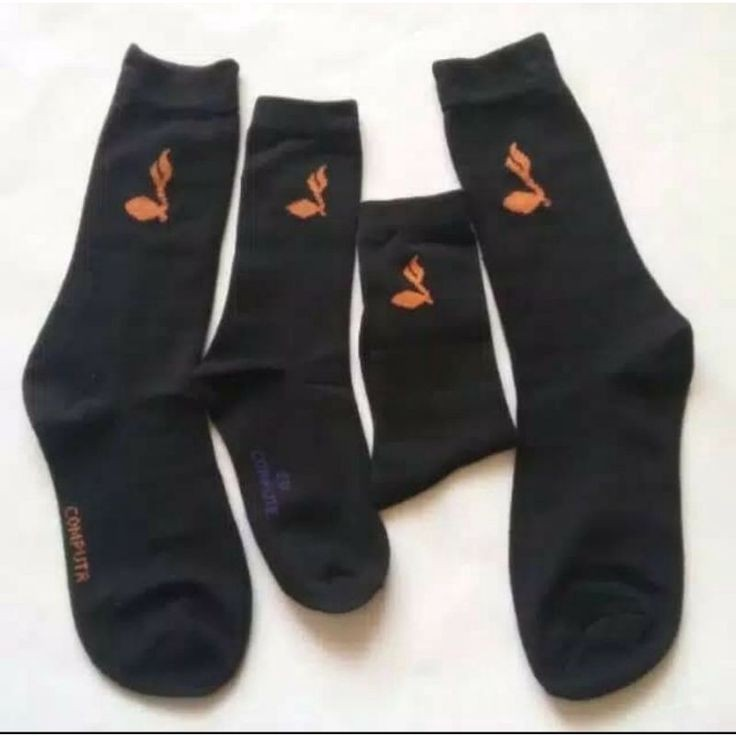
Pelengkap seragam yang membantu menjaga kenyamanan kaki.
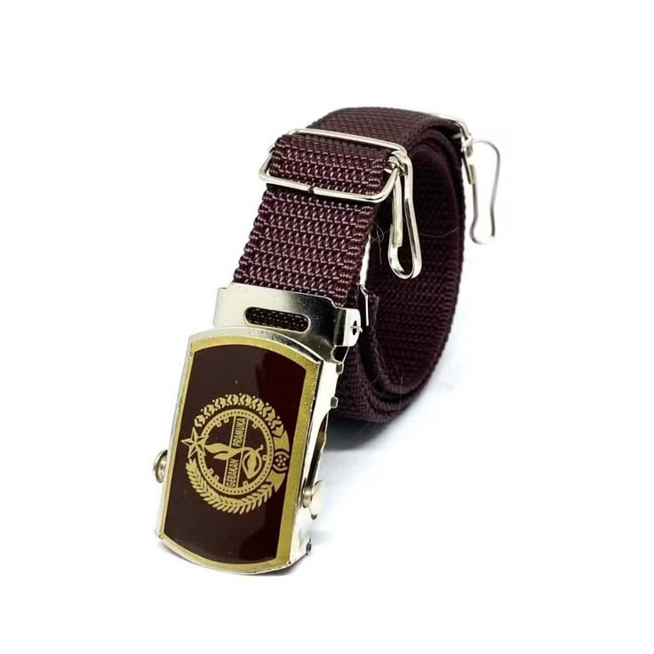
Gesper dengan lambang Pramuka untuk kelengkapan seragam.
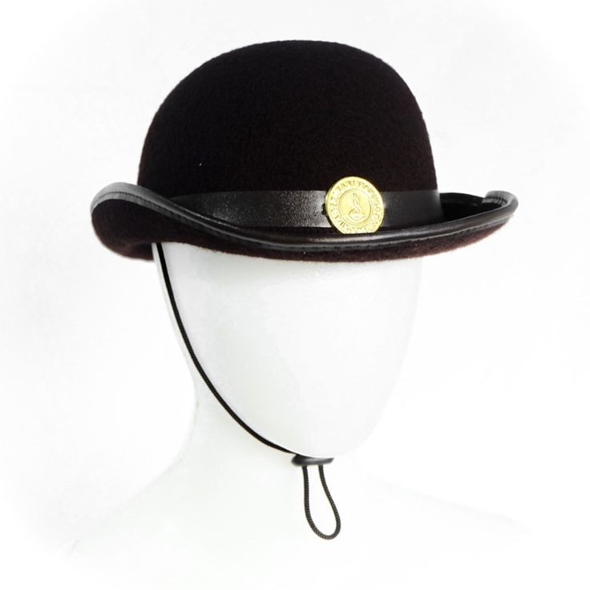
Topi boni sebagai salah satu pelengkap seragam Pramuka.
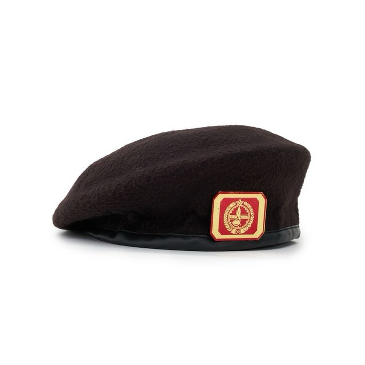
Topi baret sebagai salah satu pelengkap seragam Pramuka.
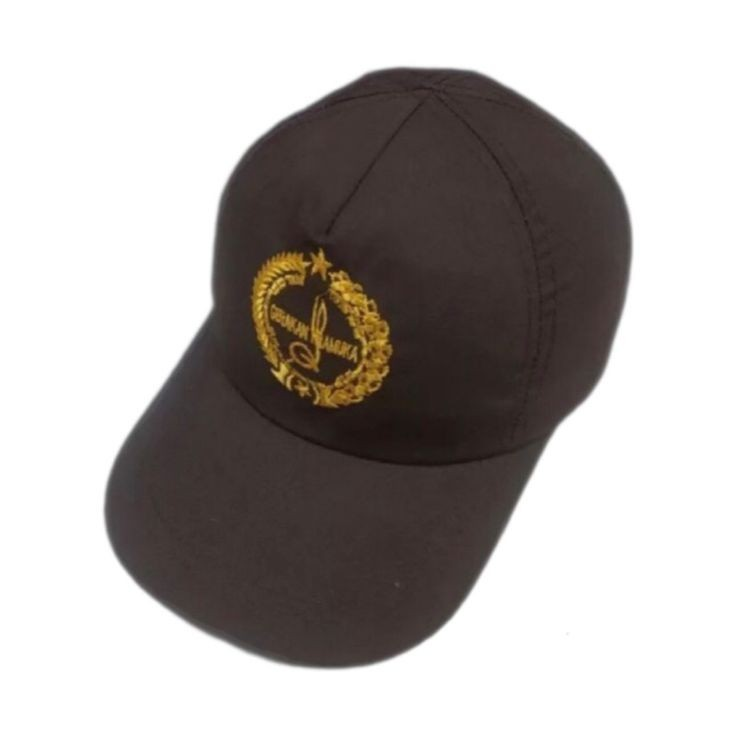
Topi siaga sebagai salah satu pelengkap seragam Pramuka.
PRAMUKA
SchoolFit menyediakan informasi mengenai seragam Pramuka untuk golongan Siaga dan Penggalang, baik putra maupun putri, serta berbagai perlengkapan pendukung kegiatan Pramuka.